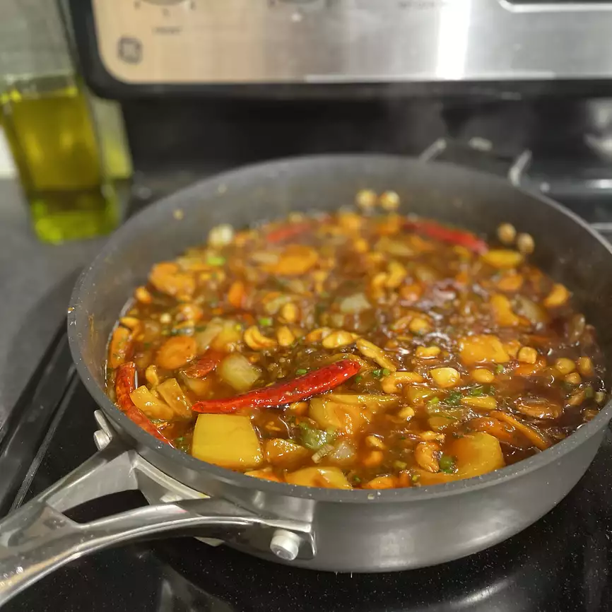

Kung Pao Chicken

Description
This spicy kung pao chicken is similar to what is served in Chinese restaurants. It's easy to make, and you can be as creative with the measurements as you want. The sauce reduces until nice and thick. Substitute cashews for peanuts, or bamboo shoots for the water chestnuts. You can't go wrong! Enjoy!
- 2 tablespoons cornstarch, dissolved in 2 tablespoons water
- 2 tablespoons white wine, divided
- 2 tablespoons soy sauce, divided
- 2 tablespoons sesame oil, divided
- Combine 1 tablespoon wine, 1 tablespoon soy sauce, 1 tablespoon sesame oil, and 1 tablespoon cornstarch/water mixture in large glass bowl. Add chicken pieces and toss to coat. Cover dish and refrigerate for about 30 minutes.
- Combine remaining 1 tablespoon wine, 1 tablespoon soy sauce, 1 tablespoon sesame oil, and remaining cornstarch/water mixture in a medium bowl. Whisk in chile paste, brown sugar, and vinegar. Add water chestnuts, peanuts, green onions, and garlic and toss to coat.
- Transfer water chestnut mixture to a medium skillet. Heat slowly over medium heat until aromatic.
- Meanwhile, remove chicken from marinade. Add to a large skillet and cook over medium-high heat, stirring, until chicken is cooked through and juices run clear.
- Combine water chestnut mixture and sautéed chicken together in one skillet. Adjust heat and simmer together until sauce thickens.